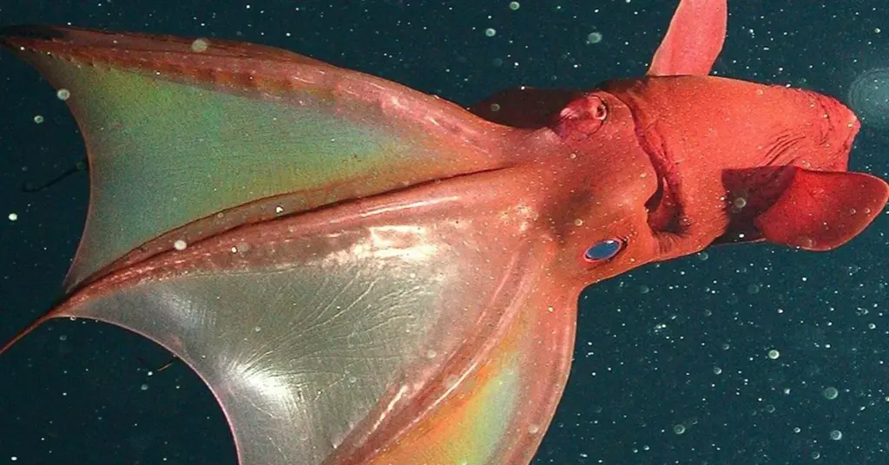

Vampire Squid
Fun facts about Vampire Squids!
-
Vampire squids aren’t actually squid or octopus as they’re their own unique species.
-
Their name means “vampire squid from hell” (but they’re harmless!).
-
They live in the deep ocean where there’s almost no oxygen.
-
Instead of ink, they shoot out glowing bioluminescent mucus to escape predators.
-
They don’t hunt like other squid, they eat marine snow (tiny bits of dead stuff floating down).
-
Their webbed arms can flip inside out to form a cloak shape for defense.
-
They have huge eyes, some of the biggest relative to body size in the animal kingdom.
-
hey can survive in places where most animals would suffocate.